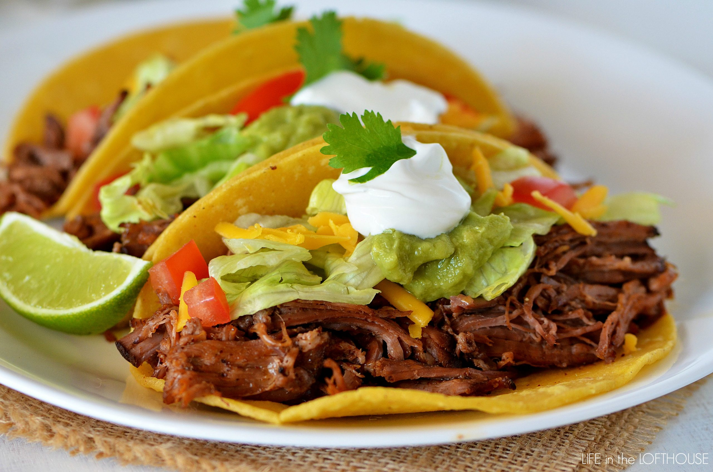

Double Decker Tacos
Description
The best tacos! A soft shell taco is layered with refried beans, then wrapped around a hard shell taco, which is filled with seasoned ground beef and topped with cheese, lettuce, tomato, onion, sour cream and fresh guacamole. You can top it with whatever you like, but I recommend loading it up! Also, if you don't eat meat, put melted cheese on the soft shell, and the refried beans in the hard.
Ingredients
- 1 pound ground beef
- 1 (1 ounce) packet taco seasoning mix
- 1 (16 ounce) can refried beans
- ⅔ cup water
- 12 prepared crisp taco shells
- 2 avocados
- 1 tablespoon sour cream
- 1 fresh lime, juiced
- 12 (7 inch) flour tortillas
- 1 large tomato, chopped
- ¼ red onion, chopped
- 1 cup shredded lettuce
- ½ cup sour cream
Steps
- Place the ground beef in a skillet over medium heat, and sprinkle about 3/4 of the packet of taco seasoning over the meat. Cook and stir the ground beef, breaking it up as it cooks, until the beef is browned and crumbly, 10 to 15 minutes. Drain the excess grease.
- Mash the refried beans with the water in a small saucepan, and sprinkle with the rest of the seasoning packet. Heat the refried beans over low heat until simmering.
- Preheat oven to 300 degrees F (150 degrees C). Place the crisp taco shells on a baking sheet, and warm them in the preheated oven for 3 to 5 minutes.
- To make the guacamole, peel, seed, and mash the avocados in a bowl with 1 tablespoon of sour cream, the lime juice, and salt and pepper to taste, and set aside.
- To build the tacos, spread each flour tortilla with about 2 tablespoons of heated refried beans. Wrap the tortilla gently around a crisp tortilla shell. Spread about 2 tablespoons of ground beef along the bottom of the crisp shell, and sprinkle about 2 tablespoons of shredded Cheddar cheese on top of the meat. Top the cheese with shredded lettuce, a sprinkle of chopped tomato and onion, and a dollop of sour cream and guacamole.